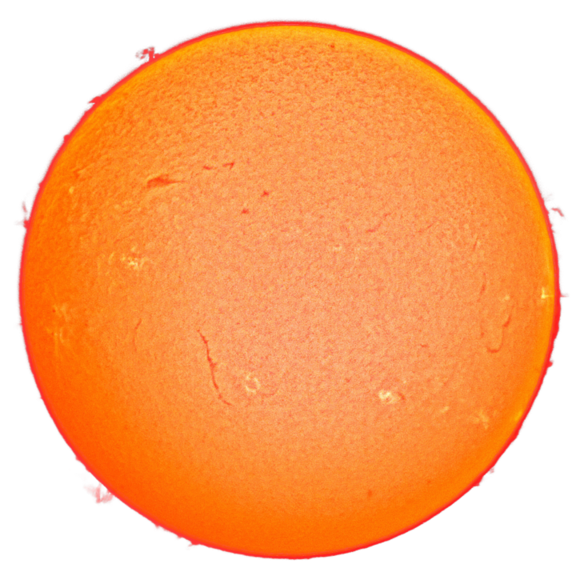

Sistemul solar
Sistemul solar (scris și Sistemul Solar) este format din Soare împreună cu sistemul său planetar (care cuprinde opt planete împreună cu sateliții lor naturali) și alte obiecte non-stelare.
În afară de cele opt planete, oamenii de știință au emis ipoteza existenței unei alte planete, denumită provizoriu A noua planetă. Această ipotetică planetă gigantă s-ar afla la marginea Sistemului Solar. Existența planetei ar explica configurarea orbitală neobișnuită a unui grup de obiecte transneptuniene (OTN). La 20 ianuarie 2016, cercetătorii Konstantin Batygin și Michael E. Brown de la Institutul de Tehnologie din California au anunțat că există dovezi suplimentare indirecte privind existența unei a noua planete dincolo de orbita planetei Neptun. Aceasta ar orbita în jurul Soarelui între 10.000 și 20.000 de ani. Conform studiului publicat în Astronomical Journal, „Planeta Nouă” ar avea o masă de aproximativ 10 ori mai mare decât Terra și s-ar afla la minim 200 UA.
Sistemul este situat într-unul dintre brațele exterioare ale galaxiei Calea Lactee (mai precis în Brațul Orion), galaxie care are cca. 200 de miliarde de stele.
El s-a format acum 4,6 miliarde de ani, ca urmare a colapsului gravitațional al unui gigant nor molecular. Cel mai masiv obiect este steaua centrală - Soarele, al doilea obiect ca masă fiind planeta Jupiter. Cele patru planete interioare mici, Mercur, Venus, Pământul și Marte, numite planete terestre / planete telurice, sunt compuse în principal din roci și metal. Cele patru planete exterioare, numite giganți gazoși, sunt mult mai masive decât cele telurice. Cele mai mari două planete, Jupiter și Saturn, sunt compuse în principal din hidrogen și heliu; cele două planete mai îndepărtate, Uranus și Neptun, sunt compuse în mare parte din substanțe cu o temperatură de topire relativ ridicată (comparativ cu hidrogenul și heliu), numite ghețuri, cum ar fi apa, amoniacul și metanul. Ele sunt denumite „giganți de gheață” (termen distinct de cel de „gigant gazos”). Toate planetele au orbite aproape circulare dispuse într-un disc aproape plat numit plan ecliptic.
Sistemul solar prezintă câteva regiuni unde se află diferite obiecte mici. Centura de asteroizi, situată între Marte și Jupiter, este similară din punct de vedere al compoziției cu planetele terestre, deoarece o mare parte dintre obiecte sunt compuse din rocă și metal. Dincolo de orbita lui Neptun se află centura Kuiper și discul împrăștiat; multe dintre obiectele transneptuniene sunt în mare parte compuse din ghețuri. Printre aceste obiecte, de la câteva zeci până la mai mult de zece mii de obiecte pot fi suficient de mari pentru a fi fost rotunjite de propria gravitație. Astfel de obiecte sunt denumite planete pitice. Planetele pitice identificate până în prezent includ asteroidul Ceres și obiectele transneptuniene: Pluto, Eris, Haumea și Makemake. În plus, în aceste două regiuni se află diferite alte corpuri mici, cum ar fi comete, centauri și materie interplanetară. Șase planete, cel puțin trei planete pitice și multe alte corpuri mici au sateliți naturali care se rotesc în jurul lor. Fiecare planetă exterioară este înconjurată de inele planetare alcătuite din praf și alte obiecte mici.
Vântul solar (un flux de plasmă de la Soare) creează în mediul interstelar o bulă cunoscută ca heliosferă, care se extinde până la marginea discului împrăștiat. La limita sa exterioară se află Norul lui Oort, care reprezintă doar un câmp de resturi rămase după crearea planetelor, fiind considerat a fi sursa pentru cometele cu perioadă lungă. El se întinde până la o distanță aproximativ de o mie de ori mai mare decât heliosfera. Heliopauza este punctul în care presiunea vântului solar este egală cu presiunea opusă a vântului interstelar.
Soarele
Soarele este steaua sistemului solar și de departe cel mai important component al acestuia. Masa sa mare (egală cu 332.900 de mase terestre) produce în nucleul său temperaturi și densități suficient de ridicate ca să susțină fuziunea nucleară, care eliberează o cantitate enormă de energie, din care cea mai mare parte radiază în restul sistemului sub formă de radiații electromagnetice, cu vârful situat în spectrul de 400-700 nm al luminii vizibile.
Soarele este clasificat ca fiind o pitică galbenă de tipul G2, dar acest nume poate induce în eroare, din moment ce comparativ cu majoritatea stelelor din galaxia noastră, Soarele este mai mare și mai luminos. Stelele sunt clasificate cu ajutorul diagramei Hertzsprung–Russell, o diagramă care reprezintă grafic luminozitatea stelelor împreună cu temperatura de la suprafața lor. În general, stelele mai fierbinți sunt mai luminoase. Stelele care satisfac această relație sunt denumite stele din secvența principală, iar Soarele se află chiar în mijlocul acestei secvențe. Totuși, stelele mai luminoase și mai fierbinți decât Soarele sunt rare, în timp ce stelele cu mult mai fade și mai reci, cunoscute și ca pitice roșii, sunt comune, reprezentând 85% din totalul stelelor din galaxie.
Unele dovezi sugerează că poziția Soarelui în secvența principală poate înseamnă că acesta se află la mijlocul ciclului de viață al unei stele, pentru că nu și-a consumat încă rezerva de hidrogen folosit pentru fuziunea nucleară. Soarele devine tot mai luminos; mai devreme în evoluția sa, luminozitatea era doar 70% din cea actuală.
Soarele face parte din populația I de stele; a luat naștere în faza târzie a evoluției universului și astfel conține mai multe elemente mai grele decât hidrogenul și heliul (numite „metale”, în context astronomic) decât stelele mai vechi ce fac parte din populația a II-a. Elementele chimice mai grele decât hidrogenul și heliul s-au format în nucleele stelelor vechi care au explodat, așadar prima generație de stele a trebuit să dispară pentru ca universul să se poată îmbogăți cu aceste elemente. Stelele mai vechi conțin mai puține metale, în timp ce stelele născute mai târziu conțin mai multe. Se crede că acest conținut mai bogat în metale a fost crucial pentru ca Soarele să dezvolte un sistem planetar, deoarece planetele se formează prin acreția „metalelor”.
Mediul interplanetar
Împreună cu lumina, Soarele radiază un flux continuu de particule încărcate (plasmă) cunoscute ca vânt solar. Acest flux de particule se răspândește spre exterior, cu o viteză de aproximativ 1,5 milioane de kilometri pe oră, creând o atmosferă fragilă (heliosfera) care pătrunde în sistemul solar până la cel puțin 100 UA. Această materie extrem de rarefiată este cunoscută sub numele de mediu interplanetar. Activitatea de pe suprafața Soarelui, cum ar fi erupțiile solare și ejecția masei coronale, perturbă heliosfera, generând vremea cosmică și cauzând furtuni geomagnetice. Cea mai mare structură din cadrul heliosferei este stratul de curent heliosferic, în formă de spirală, creat de acțiunea câmpului magnetic rotativ al Soarelui asupra mediului interplanetar.
Câmpul magnetic al Pământului împiedică atmosfera sa de a fi deposedată de vântul solar. Venus și Marte nu au câmp magnetic și ca rezultat, vântul solar face ca atmosferele lor să se împrăștie treptat în spațiu. Ejecțiile masei coronale și alte fenomene similare aruncă în spațiu un câmp magnetic și cantități imense de materie de pe suprafața Soarelui. Interacțiunea acestui câmp magnetic și a materialelor cu câmpul magnetic al Pământului provoacă apariția de particule încărcate în atmosfera superioară a Pământului, unde interacțiunea lor creează aurorele observabile în apropierea polilor magnetici.
Radiațiile cosmice provin din afara sistemului solar. Heliosfera și câmpurile magnetice planetare (pentru planetele care le au) apără parțial sistemul solar de particulele interstelare cu înaltă energie care formează razele cosmice. Densitatea razelor cosmice în mediul interstelar și puterea câmpului magnetic al Soarelui se schimbă în perioade lungi de timp, astfel încât nivelul de penetrare a radiațiilor cosmice în sistemul solar variază, deși este necunoscut cât de mult.
Mediul interplanetar conține cel puțin două regiuni în formă de disc alcătuite din praf cosmic. Prima, norul de praf zodiacal, se află în sistemul solar interior și cauzează lumina zodiacală. Probabil ea s-a format în urma coliziunilor din centura de asteroizi provocate de interacțiunea cu planetele. Cea de-a doua se întinde de la aproximativ 10 UA până la aproximativ 40 UA și a fost creată, probabil, de coliziuni similare din cadrul centurii Kuiper.
Sistemul solar interior
Sistemul solar interior este numele tradițional pentru regiunea care cuprinde planetele terestre și asteroizii. Obiectele din această regiune sunt compuse în mare parte din silicați și metale, fiind relativ aproape de Soare; raza întregii regiuni este mai mică decât distanța dintre orbitele lui Jupiter și Saturn.
Planetele interioare
Cele patru planete interioare sau telurice / terestre au o compoziție densă, de roci, cu puțini sau chiar fără sateliți și fără sisteme de inele. Ele sunt compuse în mare parte din minerale refractare, cum ar fi silicații, care formează scoarțele și mantalele planetelor, și metale ca fierul și nichelul, care formează nucleele planetare. Trei din cele patru planete interioare (Venus, Terra și Marte) au o atmosferă destul de densă pentru a genera vremea; toate au cratere de impact și caracteristici tectonice de suprafață, cum ar fi rifturi și vulcani. Termenul de „planetă interioară” nu trebuie confundat cu termenul de „planetă inferioară”, care desemnează planetele mai apropiate de Soare decât Pământul (adică Mercur și Venus).
Mercur
Mercur (0,4 UA de la Soare) este cea mai apropiată planetă de Soare şi cea mai mică planetă din Sistemul Solar (0,055 mase terestre). Mercur nu are niciun satelit natural, iar singurele caracteristici geologice cunoscute, în afara craterelor de impact, sunt crestăturile din scoarţă, care cel mai probabil se datorează unei perioade timpurii de contracţie din trecutul său. Atmosfera planetei Mercur este aproape neobservabilă şi este formată din atomi desprinşi de pe suprafaţa sa de către vântul solar. Apariţia nucleului său de fier relativ mare şi mantaua subţire nu au fost încă suficient explicate. Ipotezele includ faptul că straturile exterioare au fost dezagregate în urma impactului cu un obiect gigantic şi că acreţia completă a fost împiedicată de energia Soarelui tânăr.
Venus
Planeta Venus (0,7 UA de la Soare) este asemănătoare ca mărime cu Pământul (0,815 mase terestre) şi, la fel ca şi Terra, are o manta subţire de silicat deasupra unui nucleu de fier, o atmosferă substanţială şi indicii ale unei activităţi geologice interne. Totuşi, planeta este mult mai uscată decât Pământul iar atmosfera sa este de nouăzeci de ori mai densă. Venus nu are niciun satelit natural. Este cea mai fierbinte planetă, temperaturile de la suprafaţă depăşind 400 °C, cel mai probabil din cauza cantităţii de gaze cu efect de seră din atmosferă. Nu a fost detectată nici o dovadă definitivă a unei activităţi geologice la momentul actual pe Venus, dar planeta nu are un câmp magnetic care să prevină epuizarea atmosferei sale substanţiale, ceea ce sugerează că aceasta este încontinuu alimentată de către erupţiile vulcanice.
Pământ
Pământul (de asemenea şi Terra; 1 UA de la Soare) este cea mai mare şi cea mai densă planetă interioară, singura despre care se cunoaşte la momentul actual că este geologic activă şi singurul loc din Sistemul Solar unde se cunoaşte că există viaţă. Hidrosfera sa lichidă este unică printre planetele terestre, iar Terra este singura planetă unde au fost observate plăci tectonice. Atmosfera Pământului diferă radical faţă de cea a altor planete, fiind schimbată de prezenţa vieţii şi conţinând aproximativ 21% de oxigen liber. Planeta Pământ are doar un satelit natural, Luna, care este singurul satelit mare al unei planete telurice din Sistemul Solar.
Marte
Marte (1,52 UA de la Soare) este mai mic decât Terra şi Venus (are 0,107 mase terestre). Planeta posedă o atmosferă formată în mare parte din dioxid de carbon, cu o presiune la suprafaţă de 6,1 milibari (aproximativ 0,6% din presiunea atmosferică de la suprafaţa Pământului). Suprafaţa sa, brăzdată de vulcani vaşti ca Olympus Mons şi rifturi cum ar fi Valles Marineris, reprezintă o dovadă a activităţilor geologice care au persistat până relativ recent, cu două milioane de ani în urmă. Culoarea sa roşiatică provine de la oxizii de fier (rugină) din sol. Marte are doi sateliţi naturali foarte mici (Deimos şi Phobos) despre care se crede că au fost asteroizi capturaţi de gravitaţia planetei.
Centura de asteroizi
Asteroizii sunt obiecte mici din Sistemul Solar, compuse în mare parte din roci refractare și minerale metalice, la care se mai adăugă gheața.
Centura de asteroizi se află între planetele Marte și Jupiter, la o distanță cuprinsă între 2,3 și 3,3 UA de la Soare. Se crede ea e alcătuită din resturile rămase în urma formării Sistemului Solar, care nu au reușit să se unească din cauza interferenței gravitaționale a lui Jupiter.
Mărimea asteroizilor variază de la câteva sute de kilometri până la mărimi microscopice. Toți asteroizii, cu excepția celui mai mare, Ceres, sunt clasificați ca obiecte mici ale Sistemului Solar.
Centura de asteroizi conține zeci de mii, posibil milioane, de obiecte ce au un diametru mai mare de un kilometru. Cu toate acestea, masa totală a centurii de asteroizi măsoară în jur de o miime din masa terestră. În centura de asteroizi, obiectele sunt foarte rarefiate; navele spațiale au trecut cu ușurință prin aceasta fără niciun incident. Asteroizii cu diametre între 10 și 10−4 metri sunt denumiți meteoroizi.
Sistemul solar exterior
Regiunea exterioară a sistemului solar este locul unde se află giganții gazoși și sateliții lor. Multe comete cu perioadă scurtă, inclusiv centaurii, orbitează de asemenea în această regiune. Din cauza distanței foarte mari de la Soare, obiectele solide din sistemul solar exterior conțin o proporție mai mare de substanțe volatile cum ar fi apa, amoniacul și metanul, decât planetele de roci din sistemul solar interior, deoarece temperaturile mai reci permit menținerea acestor compuși în stare solidă.
Planetele exterioare
Cele patru planete exterioare sau giganții gazoși (uneori numite planete joviene), dețin împreună 99% din masa care orbitează în jurul Soarelui. Jupiter și Saturn au, fiecare, o masă de zeci de ori mai mare decât cea a Pământului și sunt formate preponderent din hidrogen și heliu; Uranus și Neptun sunt mai puțin masive (având sub 20 de mase terestre) și sunt compuși mai mult din ghețuri. Din această cauză, mulți astronomi cred că ei fac parte dintr-o categorie aparte, „giganții de gheață”. Toți cei patru giganți gazoși au inele, deși doar sistemul de inele al lui Saturn este ușor de observat de pe Pământ. Termenul de planetă exterioară nu trebuie confundat cu cel de planetă superioară, care desemnează planete din afara orbitei Pământului și include, astfel, atât planetele exterioare cât și pe Marte.
Jupiter
Jupiter (5,2 UA), cu o masă de 318 ori mai mare ca cea a Pământului, este de 2,5 mai masiv decât toate celelalte planete din sistemul solar laolaltă. El este compus în mare parte din hidrogen şi heliu. Căldura sa internă destul de mare creează un număr de caracteristici semi-permanente ale atmosferei sale, cum ar fi benzile de nori şi Marea Pată Roşie.
Jupiter are 67 de sateliţi cunoscuţi. Cei mai mari patru sateliţi, Ganymede, Callisto, Io şi Europa prezintă similarităţi cu planetele terestre, cum ar fi vulcanismul şi încălzirea internă. Ganymede, cel mai mare satelit din sistemul solar, este mai mare decât planeta Mercur.
Saturn
Saturn (9,5 UA), care se distinge prin sistemul său de inele uşor de observat de pe Pământ, este asemănător cu Jupiter din punctul de vedere al compoziţiei atmosferice şi al magnetosferei. Deşi Saturn are 60% din volumul lui Jupiter, el are mai puţin de o treime din masa acestuia (95 de mese terestre), fiind cea mai puţin densă planetă din sistemul solar. Inelele lui Saturn sunt alcătuite din particule mici de rocă şi gheaţă.
Saturn are 62 de sateliţi confirmaţi; doi dintre ei, Titan şi Enceladus, poartă semne de activitate geologică, deşi aceştia sunt în mare parte alcătuiţi din gheaţă (criovulcani). Titan, al doilea satelit ca mărime din sistemul solar, este mai mare decât Mercur şi singurul satelit din sistemul solar care posedă o atmosferă substanţială.
Uranus
Uranus (19,6 UA), de 14 ori mai masiv ca Pământul, are masa cea mai mică dintre toate planetele exterioare. Este singura planetă care orbitează în jurul Soarelui înclinată „pe o parte”; înclinaţia axei de rotaţie este de peste nouăzeci de grade faţă de normala la ecliptică. Planeta are un nucleu mult mai rece decât ceilalţi giganţi gazoşi şi cantitatea de căldură radiată în spaţiu este foarte mică.
Uranus are 27 de sateliţi cunoscuţi, cei mai mari fiind Titania, Oberon, Umbriel, Ariel şi Miranda.
Neptun
Neptun (30 UA), deşi este puţin mai mic decât Uranus, este mult mai masiv (aproximativ 17 mase terestre) şi prin urmare, mult mai dens. El radiază mai multă căldură internă, dar nu la fel de multă ca Jupiter sau Saturn.
Neptun are 13 sateliţi cunoscuţi. Cel mai mare, Triton, este geologic activ, având probabil gheizere de azot lichid. Triton este singurul satelit mare cu o orbită retrogradă. Neptun este însoţit pe orbita sa de o mulţime de planete minore, numite troienii lui Neptun, care au o rezonanţă orbitală de 1:1 cu el.
Centaurii
Centaurii sunt obiecte de gheață asemănătoare cometelor, cu o semiaxă mare mai mare decât cea al lui Jupiter (5,5 UA) și mai mică decât cea a lui Neptun (30 UA). Cel mai mare centaur cunoscut, 10199 Chariklo, are un diametru de aproximativ 250 km. Primul centaur descoperit, 2060 Chiron, a fost, de asemenea, clasificat drept cometă (95P) deoarece acesta dezvoltă o coadă ca și cometele, atunci când se apropie de Soare.
Regiunea transneptuniană
Zona de dincolo de Neptun sau „regiunea transneptuniană” este în mare parte neexplorată. Ea conține o mulțime de lumi mici (cea mai mare având un diametru de doar o cincime din cel al Pământului și o masă mult mai mică decât cea a Lunii), compuse în principal din roci și gheață. Această regiune este uneori cunoscută sub numele de „sistemul solar exterior”, deși alții folosesc acest termen pentru a desemna regiunea de dincolo de centura de asteroizi. În literatura astronomică internațională, corpurile cerești situate în regiunea transneptuniană sunt abreviate, de obicei, ca TNO (Trans-Neptunian Object).